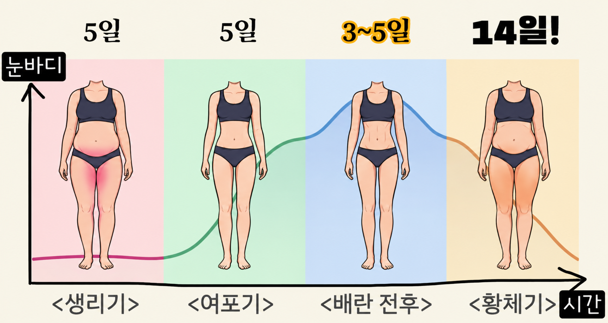

눈바디 2탄생리 주기 4단계
이렇게 먹고, 이렇게 움직이세요

약 5~7일
생리 끝 ~ 배란 전
3~5일
배란 후 ~ 생리 전
<생리기>
<여포기>
<배란기>
<황체기>
몸 상태
철분 손실,
컨디션 바닥
에너지 회복,
컨디션 상승
컨디션 최고
식욕↑ 체온↑
붓기
이렇게 먹기
철분 + 단백질
살코기·조개·두부
평소 식단
그대로
평소 식단
그대로
더 먹어도 OK
염분 극단 제한 X
운동/활동
강도 낮추기걷기·요가·가벼운 조깅
고강도 도전 ok인터벌·근력 증량
강도 유지관절 워밍업 충분히
중저강도 운동열 조절↓ → 물 자주
스포츠 영양코치 @hyewon_high1